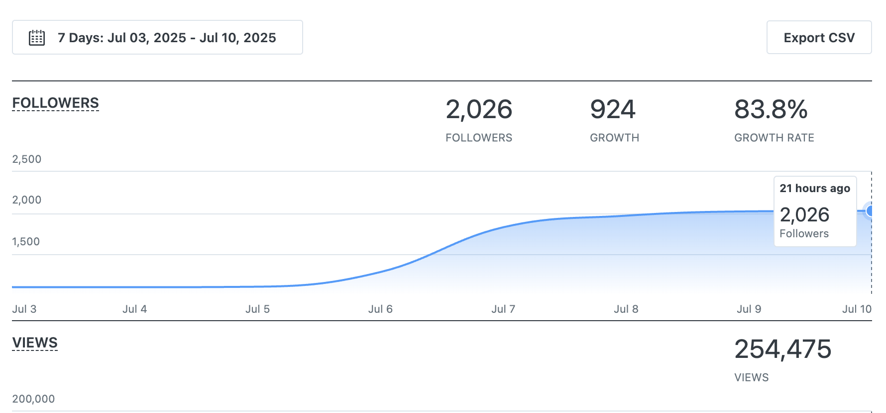
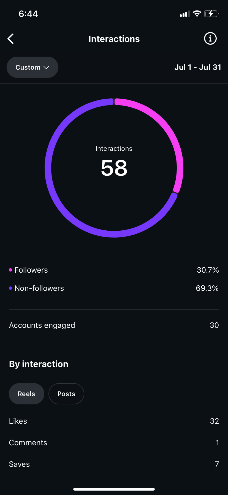
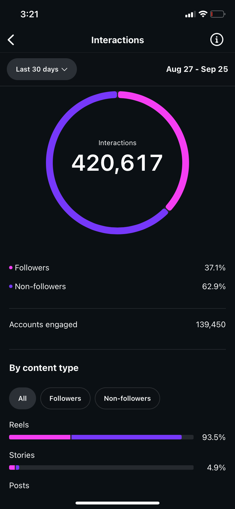
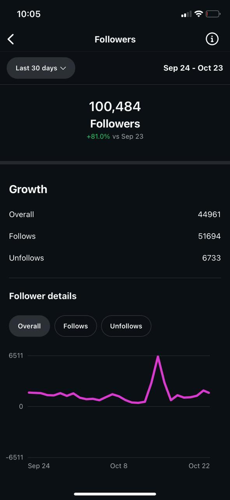
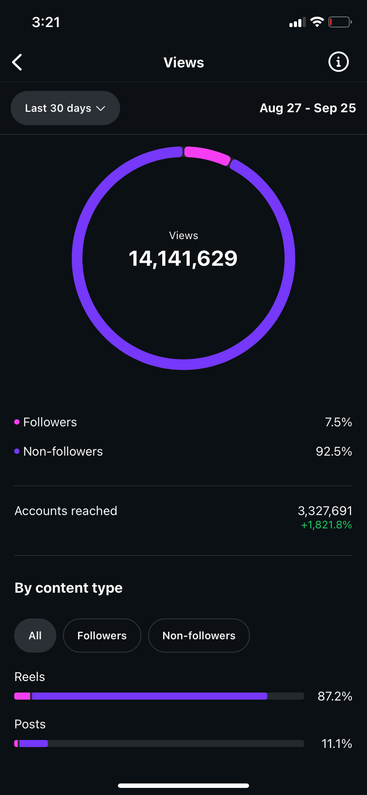
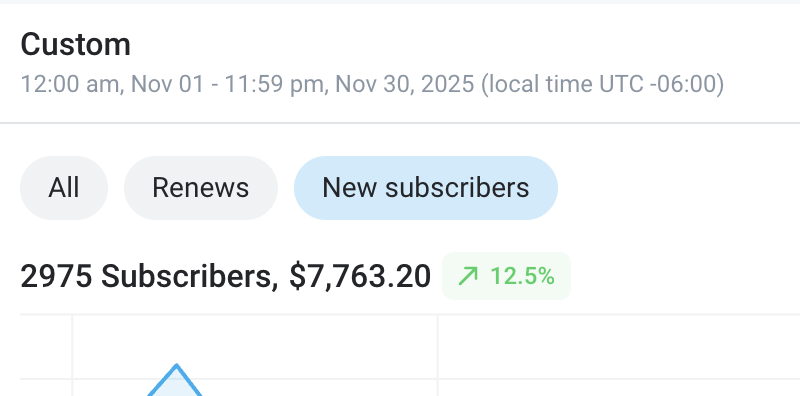
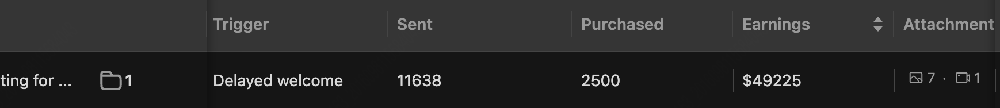
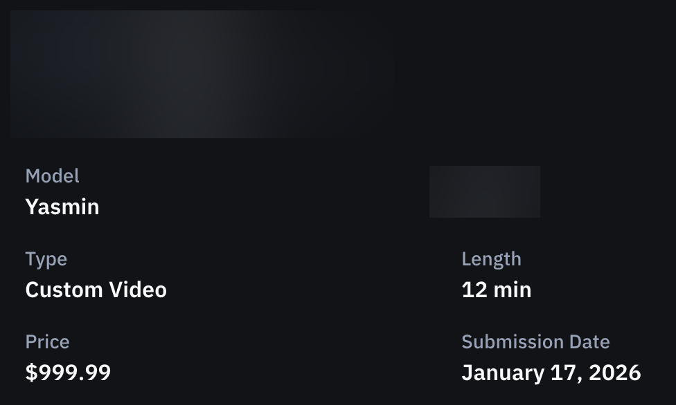

Yasmin
2K to 100K followers in 3 months
3 months with FERAL. 40K views to 40M views in one month.
The starting point
Yasmin had roughly 2,000 followers and around 40,000 monthly views on Instagram. No growth strategy, no content system, no team behind her.


The transformation
We deployed a Reels-first content strategy built around discovery. Within 2 weeks, she went from 2K to 44K followers. By month 3, she hit 100K followers with only 8 grid posts. 92.5% of her reach came from non-followers.


Month-by-month growth


Monetization
A single welcome message automation generated $49,225 in cumulative revenue. Custom videos priced at $1,000 each. The content strategy we built didn't just grow followers - it converted them.


Key results
- 2K to 100K Instagram followers in 3 months
- 44K followers gained in 2 weeks
- 40K to 40M monthly views (1,000x increase)
- 100K followers with only 8 grid posts
- 92.5% of reach from non-followers
- $49K from a single automation
Ready for results like these?
Every creator we work with gets a dedicated team. Apply today.
Apply to FERAL